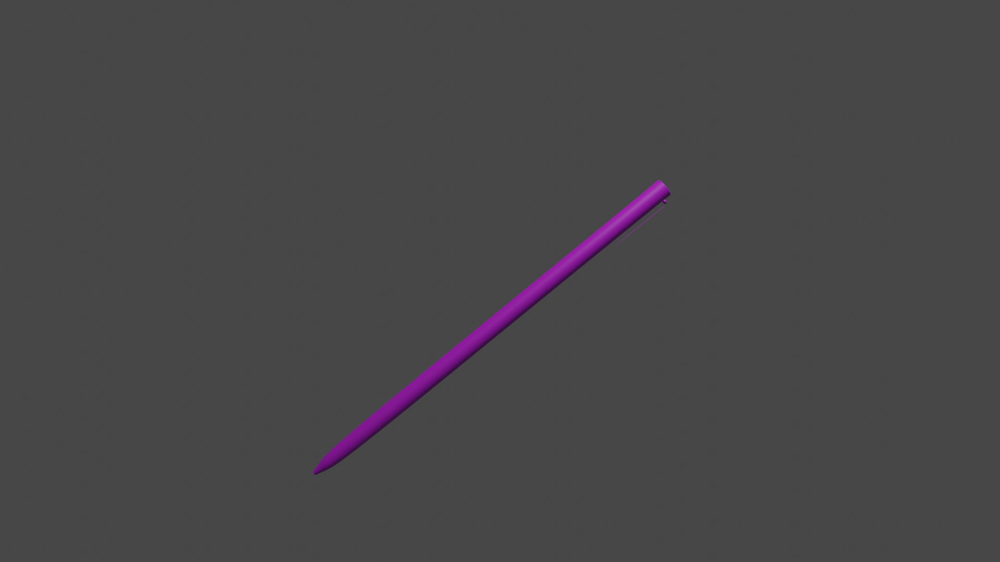

 Состоит из стержня (обычно — пластиковой трубочки), заполненной пастообразными чернилами, и шарикового пишущего наконечника, размещённого на конце стержня. Наконечник состоит из трубки (медь, нейзильбер, сталь или др.), одним концом входящей в стержень, и маленького металлического шарика, размещённого с небольшим зазором в другом конце трубки так, что один его конец выступает из трубки. Для достижения износоустойчивости шарики изготавливают из твёрдого материала, например, из стали или карбида вольфрама, а сферической формы добиваются шлифованием с использованием алмазной пасты или другими методами. Благодаря сферической форме и зазору между шариком и трубкой наконечника шарик может вращаться. Чернила из стержня по трубке наконечника поступают к шарику и смачивают одну его сторону. При письме шарик вращается за счёт трения между бумагой и шариком, смоченная чернилами сторона шарика оказывается снаружи трубки, и чернила с шарика переносятся на бумагу. Вязкость и плотность чернил должны быть такими, чтобы чернила не вытекали (были густыми) из стержня ни с открытого конца, ни через зазор между трубкой и шариком, прилипали к последнему и переносились на бумагу, к тому же чернила должны достаточно быстро сохнуть на бумаге, поэтому чернила для перьевых ручек не подходят для шариковых авторучек. Чернила для шариковых авторучек (чернильная паста) создаются на масляной основе с добавлением пигментов или красителей для придания им различных цветов. За счёт простоты конструкции шариковые ручки дёшевы и широко распространены.
Перо — основной элемент пишущего узла перьевых ручек независимо от их типа и конструкции. Технические особенности пера, существенно влияющие на параметры чернильного следа, как то количество, ширина и профиль капиллярных прорезей, форма и размер пишущего конца задаются в ходе изготовления пера и могут быть лишь относительно незначительно скорректированы подгибом и переточкой пишущего конца. В то же время выполнение штрихов различной ширины и интенсивности в некоторых ограниченных пределах может быть выполнено путём изменения нажима на перо и направления ведения пера. В просторечии пером нередко называют перьевую ручку и авторучку, оснащённую пером. Происхождение названия обусловлено тем, что до внедрения в широкую практику перьевых ручек люди использовали для письма крупные перья птиц, надлежащим образом подготовленные и заточенные. Такие перья могут использоваться и сейчас для специальных целей, например, в изобразительном искусстве. Аллегорически под пером могут понимать вообще любой инструмент для письма, например: «К штыку приравняли перо».
Карандаши принято делить на простые и цветные. Простой карандаш имеет графитовый грифель и пишет серым цветом с оттенками от светлого до почти чёрного (зависит от твёрдости графита). Оправа грифеля может быть деревянной, пластиковой, бумажной, верёвочной. Такие карандаши считаются одноразовыми. Иногда на обратном конце карандаша укреплён ластик в обойме. Новый одноразовый карандаш с деревянной или пластиковой оправой грифеля перед первым применением часто требуется заточить (очинить). В процессе применения грифель изнашивается или ломается, и для продолжения работы требуется повторная заточка. Специально для этого предназначена точилка для карандашей. Карандаш с деревянной и пластиковой оправой грифеля может иметь круглое, шестигранное, треугольное (с закруглёнными углами) сечение. Строительные карандаши имеют овальное или прямоугольное со скошенными углами сечение и плоский грифель. Помимо одноразовых карандашей существуют многоразовые механические карандаши со сменными грифелями, удерживаемыми цанговым или другим зажимом.